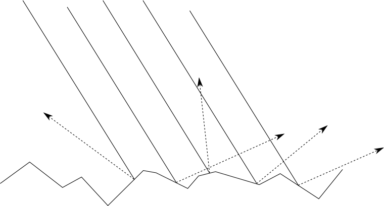
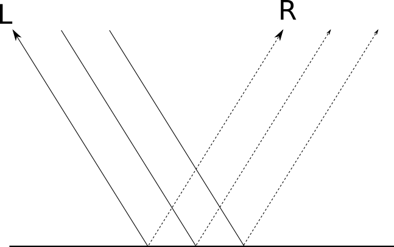
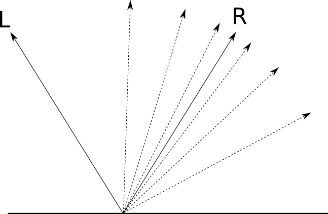
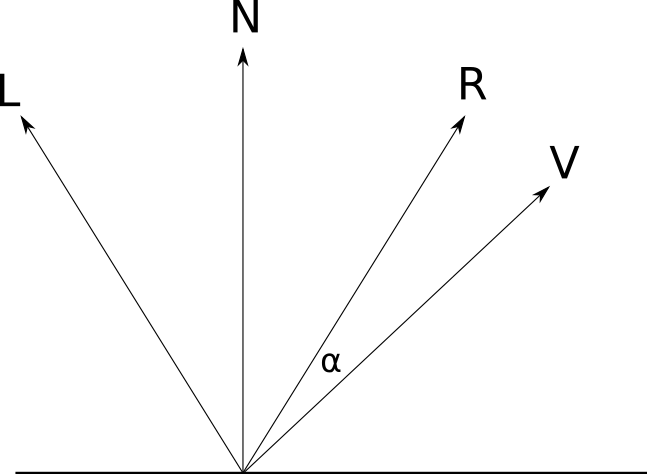
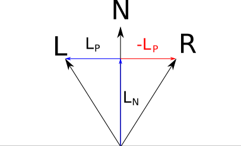
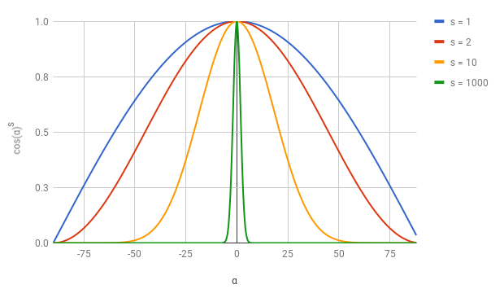
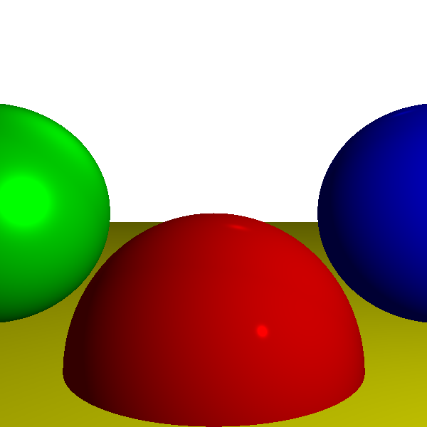

Parlak Nesneler ve Specular Yansıma
Mat nesneler ışığı her yöne saçar; bu, örneğin bir kağıt yüzeyinin ışığı nasıl yaydığını düşünmek gibidir. Ancak parlak nesneler farklı davranır. Örneğin, bir bilardo topu veya cilalanmış bir araba yüzeyi gibi parlak nesneler üzerinde, ışık kaynağına bağlı olarak parlak noktalar (highlights) görürsünüz. Bu noktalar hareket ettikçe, ışık kaynağına göre konum değiştirir. İşte bu, specular yansıma dediğimiz olaydır. Latince "speculum" kelimesi "ayna" anlamına gelir ve parlak yüzeylerin belirli bir düzen içinde ışığı yansıtarak ayna benzeri bir etki oluşturduğu anlamına gelir.
Specular yansıma, diffuse yansımanın yerine geçmez, aksine onu tamamlar. Diffuse yansıma, yüzeyin genel aydınlatması için önemlidir ancak parlaklık ve derinlik etkisi specular yansıma ile sağlanır.
Yüzey Pürüzlülüğü
Bir yüzeyin pürüzlülüğü, onun ışığı nasıl yansıttığını belirleyen önemli bir faktördür. Mat yüzeyler, mikroskobik düzeyde rastgele yönlenmiş parçacıklardan oluşur ve bu parçacıklar ışığı her yöne saçar.

Buna karşılık, parlak yüzeyler düzgündür ve ışık belirli bir yönde yansır. Bu tür yüzeylerde, ışığın yansıdığı yön (R) belirginleşir.

Cilalanmışlık derecesine göre R etrafında ne kadar ışık dağıldığı değişir. Bu, yüzeyin ne kadar parlak olduğuna bağlıdır. Işık, yüzeyin pürüzsüzlük derecesine bağlı olarak R etrafında yoğunlaşır veya dağılır.

Yansıma Vektörü \( \vec{R} \) Hesaplama
Specular yansımanın matematiksel olarak modellenmesi için birkaç vektör kullanırız:
- \( \vec{L} \): Işık yönünü belirtir (ışığa doğru).
- \( \vec{N} \): Yüzey normali (yüzeye dik vektör).
- \( \vec{R} \): Yansıma vektörü, \( \vec{L} \)'nin \( \vec{N} \)'e göre simetriğidir.
- \( \vec{V} \): Görüntüye doğru (kameraya) vektör, genellikle \( -\vec{D} \) olarak tanımlanır.
- \( \alpha \): \( \vec{R} \) ile \( \vec{V} \) arasındaki açı.

İlk adım, L vektörünü N'e paralel ve dik bileşenlerine ayırmaktır:
\( \vec{L_P} = \vec{L} - \vec{L_N} \) (N'e dik bileşen)

Bu bileşenleri kullanarak, R vektörünü L'nin N'e göre simetriği olarak hesaplarız:

Örneğin, diyelim ki L vektörümüz \( (1, 2, 3) \), N vektörümüz ise \( (0, 1, 0) \) olsun. İlk olarak L'nin N'e paralel bileşenini bulalım:
float dotNL = v_dot(N, L); // N·L
Vec3 LN = v_scl(N, dotNL); // L_N = N * (N·L)
Bu hesaplamadan sonra, L'nin N'e dik bileşenini buluruz:
Vec3 LP = v_sub(L, LN); // L_P = L - L_N
Son olarak, R vektörünü hesaplarız:
Vec3 R = v_sub(v_scl(N, 2.0f * dotNL), L); // R = 2*N*dotNL - L
Specular Formül
Cosine fonksiyonu, specular yansımanın hesaplanmasında önemli bir rol oynar. Cosine fonksiyonunun bazı güzel özellikleri vardır:
- \( \cos(0) = 1 \) - Tam yansıma yönünde bakıyorsak maksimum parlaklık elde ederiz.
- \( \cos(90) = 0 \) - Yana bakıyorsak parlaklık yoktur.

Farklı parlaklık dereceleri için \( \cos(\alpha)^s \) kullanıyoruz. Burada \( s \) specular exponent olarak adlandırılır ve parlaklığın dağılımını kontrol eder:
- \( s \) büyükse -> dar parlak nokta (çok parlak).
- \( s \) küçükse -> geniş parlak alan (az parlak).

Specular terimi şu şekilde hesaplanır:
Bu denklemde:
- \( I_S \): Specular ışık yoğunluğu.
- \( I_L \): Işık kaynağının yoğunluğu.
- \( \langle \vec{R}, \vec{V} \rangle \): R ve V vektörlerinin dot çarpımı.
- \( s \): Specular exponent.
Tam Aydınlatma Denklemi
Bir yüzeyin toplam aydınlatmasını hesaplarken hem diffuse hem de specular bileşenler göz önünde bulundurulmalıdır:
Bu denklemde, her terim şu anlama gelir:
- \( I_P \): Yüzeydeki toplam ışık yoğunluğu.
- \( I_A \): Ortam ışığı.
- \( I_i \): Her ışık kaynağının yoğunluğu.
- \( \langle \vec{N}, \vec{L_i} \rangle \): Diffuse bileşen.
- \( \left( \frac{\langle \vec{R_i}, \vec{V} \rangle}{|\vec{R_i}| |\vec{V}|} \right)^s \): Specular bileşen.
Sahne Güncelleme
Kürelerin specular değerlerini güncelleyelim:
- Kırmızı: \( s=500 \) (parlak).
- Mavi: \( s=500 \) (parlak).
- Yeşil: \( s=10 \) (biraz parlak).
- Zemin: \( s=1000 \) (çok parlak).
Mat nesneler için \( s=-1 \) (specular hesaplanmaz).
Specular Sonuç

Kırmızı kürede (s=500) dar parlak bir nokta oluşurken, yeşil kürede (s=10) geniş bir parlak alan oluştuğunu görebilirsiniz.
Raylib Kodu: Specular Aydınlatma
#include "raylib.h"
#include <math.h>
#include <float.h>
/*
* Ornek 06 - Specular (Aynamsı) Aydinlatma ile Isin Izleyici
*
* Diffuse modele specular yansima eklenir.
* Her kurenin bir "specular" ustu (parlaklık katsayisi) vardir.
* R = 2N(N·L) - L formuluyle yansima vektoru hesaplanir.
* cos(alpha)^s ile parlak noktalar olusturulur.
*/
// ---- Vektor Islemleri ----
typedef struct { float x, y, z; } Vec3;
Vec3 v_add(Vec3 a, Vec3 b) { return (Vec3){a.x+b.x, a.y+b.y, a.z+b.z}; }
Vec3 v_sub(Vec3 a, Vec3 b) { return (Vec3){a.x-b.x, a.y-b.y, a.z-b.z}; }
Vec3 v_scl(Vec3 v, float s) { return (Vec3){v.x*s, v.y*s, v.z*s}; }
float v_dot(Vec3 a, Vec3 b) { return a.x*b.x + a.y*b.y + a.z*b.z; }
float v_len(Vec3 v) { return sqrtf(v_dot(v, v)); }
Vec3 v_norm(Vec3 v) { float l = v_len(v); return (Vec3){v.x/l, v.y/l, v.z/l}; }
// ---- Kure (specular eklendi) ----
typedef struct {
Vec3 center;
float radius;
unsigned char r, g, b;
int specular; // -1 = mat, >0 = parlak
} Sphere;
#define SPHERE_COUNT 4
Sphere spheres[SPHERE_COUNT] = {
{{ 0.0f, -1.0f, 3.0f}, 1.0f, 255, 0, 0, 500}, // Kirmizi - parlak
{{ 2.0f, 0.0f, 4.0f}, 1.0f, 0, 0, 255, 500}, // Mavi - parlak
{{-2.0f, 0.0f, 4.0f}, 1.0f, 0, 255, 0, 10}, // Yesil - biraz parlak
{{ 0.0f,-5001.0f,0.0f}, 5000.0f, 255, 255, 0, 1000}, // Zemin - cok parlak
};
// ---- Isik Kaynaklari ----
typedef enum { L_AMBIENT, L_POINT, L_DIRECTIONAL } LType;
typedef struct { LType type; float intensity; Vec3 pos; Vec3 dir; } Light;
#define LIGHT_COUNT 3
Light lights[LIGHT_COUNT] = {
{ L_AMBIENT, 0.2f, {0,0,0}, {0,0,0} },
{ L_POINT, 0.6f, {2,1,0}, {0,0,0} },
{ L_DIRECTIONAL, 0.2f, {0,0,0}, {1,4,4} },
};
// ---- Isin-Kure Kesisimi ----
void IntersectRS(Vec3 O, Vec3 D, Sphere s, float *t1, float *t2)
{
Vec3 CO = v_sub(O, s.center);
float a = v_dot(D, D);
float b = 2.0f * v_dot(CO, D);
float c = v_dot(CO, CO) - s.radius * s.radius;
float disc = b*b - 4*a*c;
if (disc < 0) { *t1 = FLT_MAX; *t2 = FLT_MAX; return; }
float sq = sqrtf(disc);
*t1 = (-b + sq) / (2*a);
*t2 = (-b - sq) / (2*a);
}
// ---- Aydinlatma: Diffuse + Specular ----
float ComputeLighting(Vec3 P, Vec3 N, Vec3 V, int spec)
{
float i = 0.0f;
for (int li = 0; li < LIGHT_COUNT; li++) {
if (lights[li].type == L_AMBIENT) {
i += lights[li].intensity;
continue;
}
Vec3 L = (lights[li].type == L_POINT)
? v_sub(lights[li].pos, P)
: lights[li].dir;
// Diffuse
float ndl = v_dot(N, L);
if (ndl > 0)
i += lights[li].intensity * ndl / (v_len(N) * v_len(L));
// Specular
if (spec != -1) {
// R = 2N(N·L) - L
Vec3 R = v_sub(v_scl(N, 2.0f * v_dot(N, L)), L);
float rdv = v_dot(R, V);
if (rdv > 0) {
float factor = powf(rdv / (v_len(R) * v_len(V)), (float)spec);
i += lights[li].intensity * factor;
}
}
}
return i;
}
// ---- Isin Izleme ----
Color TraceRay(Vec3 O, Vec3 D, float t_min, float t_max)
{
float closest_t = FLT_MAX;
int idx = -1;
for (int i = 0; i < SPHERE_COUNT; i++) {
float t1, t2;
IntersectRS(O, D, spheres[i], &t1, &t2);
if (t1 >= t_min && t1 <= t_max && t1 < closest_t) { closest_t = t1; idx = i; }
if (t2 >= t_min && t2 <= t_max && t2 < closest_t) { closest_t = t2; idx = i; }
}
if (idx == -1) return RAYWHITE;
Vec3 P = v_add(O, v_scl(D, closest_t));
Vec3 N = v_norm(v_sub(P, spheres[idx].center));
Vec3 V = v_scl(D, -1.0f); // V = -D
float light = ComputeLighting(P, N, V, spheres[idx].specular);
if (light > 1.0f) light = 1.0f;
unsigned char cr = (unsigned char)fminf(255, spheres[idx].r * light);
unsigned char cg = (unsigned char)fminf(255, spheres[idx].g * light);
unsigned char cb = (unsigned char)fminf(255, spheres[idx].b * light);
return (Color){cr, cg, cb, 255};
}
Vec3 CanvasToViewport(int cx, int cy, int cw, int ch)
{
return (Vec3){ (float)cx/(float)cw, (float)cy/(float)ch, 1.0f };
}
int main(void)
{
const int CW = 600, CH = 600;
InitWindow(CW, CH, "Ornek 06 - Specular Aydinlatma Raytracer");
Image img = GenImageColor(CW, CH, RAYWHITE);
Vec3 O = {0, 0, 0};
for (int x = -CW/2; x < CW/2; x++) {
for (int y = -CH/2; y < CH/2; y++) {
Vec3 D = CanvasToViewport(x, y, CW, CH);
Color c = TraceRay(O, D, 1.0f, FLT_MAX);
int sx = x + CW/2;
int sy = CH/2 - y;
if (sx >= 0 && sx < CW && sy >= 0 && sy < CH)
ImageDrawPixel(&img, sx, sy, c);
}
}
Texture2D tex = LoadTextureFromImage(img);
UnloadImage(img);
SetTargetFPS(60);
while (!WindowShouldClose()) {
BeginDrawing();
ClearBackground(RAYWHITE);
DrawTexture(tex, 0, 0, WHITE);
DrawRectangle(0, 0, CW, 55, Fade(BLACK, 0.6f));
DrawText("Diffuse + Specular Aydinlatma", 10, 8, 22, WHITE);
DrawText("Kirmizi(s=500) Mavi(s=500) Yesil(s=10) Zemin(s=1000)",
10, 33, 14, LIGHTGRAY);
EndDrawing();
}
UnloadTexture(tex);
CloseWindow();
return 0;
}
Bu Kod Ne Yapıyor?
Kod, bir sahnede küreler ve ışık kaynakları ile specular yansımanın nasıl çalıştığını gösteren bir ray tracing uygulamasıdır. Şimdi bu kodun bazı önemli kısımlarını inceleyelim:
Sphere Yapısına Eklenen Specular Alanı
Her bir küre, specular yansımayı tanımlayan bir specular alanına sahiptir. Bu alan, kürenin parlaklık derecesini temsil eder:
typedef struct {
Vec3 center;
float radius;
unsigned char r, g, b;
int specular; // -1 = mat, >0 = parlak
} Sphere;
ComputeLighting'e Eklenen V ve Spec Parametreleri
ComputeLighting fonksiyonu, yüzeyin toplam aydınlatmasını hesaplarken specular yansıma terimini de dikkate alır. V parametresi, kameraya doğru yönü gösterir ve spec parametresi, specular yansımanın derecesini belirler:
float ComputeLighting(Vec3 P, Vec3 N, Vec3 V, int spec)
R Vektörü Hesabı: \( \vec{R} = 2\vec{N}(\vec{N} \cdot \vec{L}) - \vec{L} \)
R vektörü, ışık yönünün yüzey normaline göre simetrik yansımasıdır. Bu hesaplama, specular yansımanın yönünü belirler:
Vec3 R = v_sub(v_scl(N, 2.0f * v_dot(N, L)), L);
Specular Terim: \( \text{pow}(rdv / (v_{\text{len}}(R) * v_{\text{len}}(V)), spec) \)
Specular terim, R ve V vektörlerinin dot çarpımının normalize edilmiş halinin bir üs alma işlemi ile hesaplanır. Bu, specular ışığın yoğunluğunu belirler:
float factor = powf(rdv / (v_len(R) * v_len(V)), (float)spec);
V = -D (Kameraya Doğru Yön)
V, görüntüye doğru olan vektördür ve D'nin tersidir. Bu, yansıma yönünü hesaplamak için kullanılır:
Vec3 V = v_scl(D, -1.0f); // V = -D
- Kırmızı kürenin specular değerini 500 yerine 1000 yapın ve nasıl daha parlak bir etki yarattığını gözlemleyin.
- Yeşil kürenin specular değerini 10 yerine 50 yapın - parlaklık nasıl değişiyor?
- Zemin için specular değeri -1 yapın - specular yansıma kayboluyor mu?
Özet ve Sonraki Adımlar
Bu bölümde specular yansımanın temel kavramlarını öğrendik ve bir sahnede nasıl uygulanabileceğini gördük. Işık kaynakları ile birlikte diffuse ve specular yansımayı birleştirerek daha gerçekçi görüntüler elde ettik.
Sonraki bölümde gölgeler ve yansımalar gibi diğer önemli efektlere odaklanacağız. Bu efektler, sahnenizdeki nesnelerin daha doğal ve üç boyutlu görünmesini sağlar.